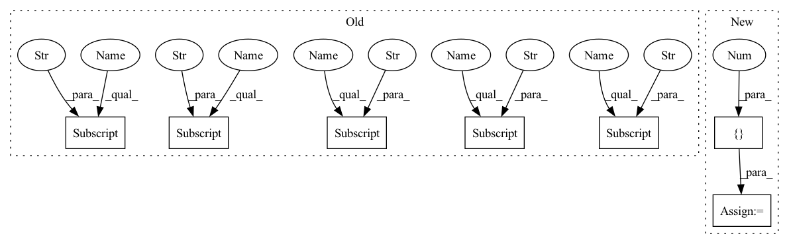

Pattern ID :198

Before Change
super().__init__()
self.mlp1 = MLP(
hparams_net["MLP1_channels"], batch_norm=hparams_net["batch_norm"]
)
self.mlp2 = MLP(
hparams_net["MLP2_channels"], batch_norm=hparams_net["batch_norm"]
)
self.mlp3 = MLP(
hparams_net["MLP3_channels"], batch_norm=hparams_net["batch_norm"]
)
self.lin = Lin(hparams_net["MLP3_channels"][-1], hparams_net["num_classes"])
pi_init = hparams_net["pi_init"]
a = 0
b = -np.log((1 - pi_init) / pi_init)
self.lin.bias = torch.nn.Parameter(
torch.Tensor(
After Change
self.num_classes = hparams_net["num_classes"]
bn = hparams_net.get("batch_norm", True)
d1 = hparams_net.get("MLP1_channels", [10, 64, 64])
d2 = hparams_net.get("MLP2_channels", [64, 256, 512, 1024])
d3 = hparams_net.get("MLP3_channels", [1088, 512, 256, 64, 4])
self.mlp1 = MLP(d1, batch_norm=bn)
In pattern: SUPERPATTERN
Frequency: 3
Non-data size: 7
Instances
Fragment ID: 666274
Project Name: ignf/lidar-deep-segmentation
Commit Name: ceaad77313bde51c4368942aabb393554caf305e
Time: 2022-02-08
Author: charles.gaydon@gmail.com
File Name: lidar_multiclass/models/modules/point_net.py
Class Name: PointNet
Method Name: __init__
Parent Class: nn.Module
Fragment ID: 666268
Project Name: eric612/mobilenet-yolo-pytorch
Commit Name: 83f9255a72f29013e9893b0dbff6a3aa88f64b78
Time: 2021-03-24
Author: eric612kimo@yahoo.com.tw
File Name: models/voc/mbv2_yolo.py
Class Name: yolo
Method Name: __init__
Parent Class: nn.Module
Fragment ID: 666275
Project Name: ignf/lidar-deep-segmentation
Commit Name: ceaad77313bde51c4368942aabb393554caf305e
Time: 2022-02-08
Author: charles.gaydon@gmail.com
File Name: lidar_multiclass/models/modules/point_net.py
Class Name: PointNet
Method Name: __init__
Parent Class: nn.Module